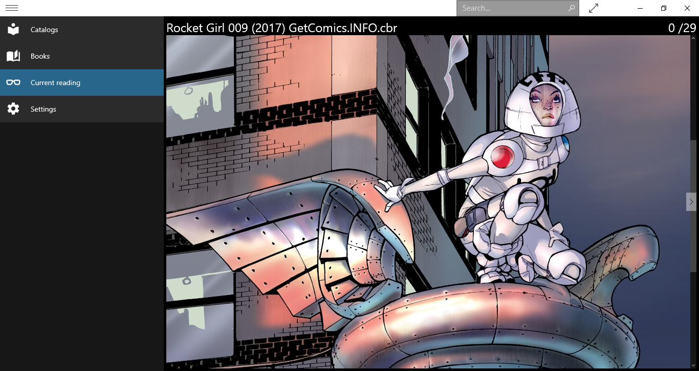

ComIko for Windows 10 ©
ComIko , shortcut for Come, Iko (my Golden Retreiver) ! = Comic'o - is designed to be the most simple and powerfull comic book reader that can parse thousand of books in seconds.
Automatic scan will create catalogs and books for you based on folders and files. Nothing to do, just set the root folder !
Present all your book collection on one screen with an advanced search function in the title bar availaible everywhere in the application

Maximize the reading space with collapsible menu, full screen mode and an automatic width adjusment. It support CBZ/ZIP, CBR/RAR and PDF formats.
So simple it is. Set your book folder and that's all. You can reset your account and remove all temporary data.